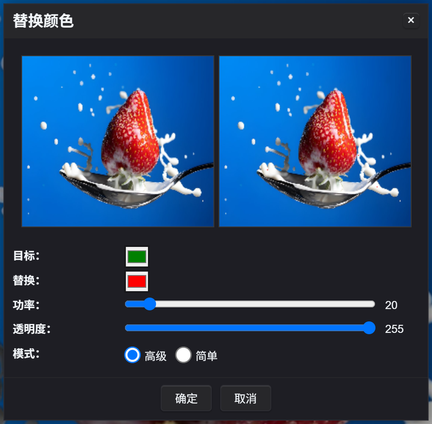

在照片里改商品颜色
同一款杯子有五个颜色，你只拍了一个；或者样品到手的色号和定稿不一样。商品图改色是浏览器编辑器少数真正能顶上去的活儿——前提是物体本身颜色比较统一、光线没有乱到离谱。
【工具】→【替换颜色】 给的是 目标 颜色、替换 颜色、功率 容差、透明度 和 模式。控件不多，成片质量主要取决于动手前的两件事：取样取对、以及选一个经得起换色的物体。

动手前：先把真实颜色取出来
用 吸管工具点在物体的中间调区域——不要点高光，不要点阴影。高光被冲淡发白，阴影压向黑，两者给出的十六进制都不是产品色；拿它当目标，整片表面都会换歪。
先 【图层】→【复制】，在副本上做替换颜色。结果差一点点的时候，可以擦掉副本的一部分，而不是把整个操作撤销重来。
五个控件分别在管什么
| 控件 | 范围 / 默认 | 决定什么 |
|---|---|---|
| 目标 | 当前前景色 | 替换哪一个颜色。靠取样设，别靠猜十六进制 |
| 替换 | 默认 #ff0000 | 新颜色。有品牌色号就填精确值 |
| 功率 | 0–255，默认 20 | 容差。越大，目标附近的色阶吃得越多——背景也一起被吃 |
| 透明度 | 0–255，默认 255 | 替换结果的不透明度。常规换色保持 255；调低会变半透明，下层内容透出来 |
| 模式 | 高级 / 简单 | 高级保留更多原始明暗层次；简单会更平，更贴替换色 |
功率从 10 起步，每次加 5。太低，物体背光处会留一圈旧颜色；太高，背景和旁边的物体开始变色。正确的数值，就是背景刚要动的上一个数。
实例：蓝杯换陶土色
- 用 吸管工具 取杯身中间调，记下十六进制。
- 复制图层，选中副本。
- 【工具】→【替换颜色】：目标 = 刚取的色值，替换 = 品牌陶土色，功率 = 10，模式 = 高级。
- 确定后 100% 检查。杯把上还留着一圈蓝边，就撤销，功率改 20 再来一次。
- 专门看桌面反光和杯子边缘的背景——功率过高，最先在这两处露馅。
换完为什么看着假
- 亮度留住了，色相没留住。 深蓝的物体换成浅黄，暗部还是那么暗，看起来就是一只脏黄杯子。色相跨度大的时候，换完要用 【图片】→【颜色校正】 提亮。
- 彩色反光还在。 蓝杯子会在白桌上投一片蓝。物体变了、溢色没变，眼睛立刻察觉矛盾。
- 功率过高。 物体的暗部和高光离取样色很远，于是它们没变、只有中间调变了，边缘就出现一圈不匹配的过渡。
- 有纹理的表面。 木纹、牛仔、拉丝金属本身包含很多色阶，一个目标色只换掉其中一部分，剩下的会变成条纹。
- 图案和 logo。 印在物体上的东西要么跟着被换色，要么被排除在外，两种都别扭。
什么时候该换个方法
如果物体已经在透明底或纯色底上分出来了，更干净的做法是：选中物体，新建一层填目标色，把这层的 【图层】→【合成】 模式设为 multiply（正片叠底）或 color（颜色）——下拉里显示的就是这两个英文值。明暗全保留，以后换色只改一个色块——具体做法在图层混合模式那篇里。
如果表面有纹理，或者必须保住印上去的标签，老实说没有任何自动替换会好看。重新拍一张正确颜色的，十分钟；修一张换砸的，花更久，而且一眼还是假的。
常见问题
换完颜色看着脏、发闷，为什么？
因为换色改的是色相，亮度还是原来的。深色物体换成浅色，暗部依旧是暗的，看着就脏。换完用【图片】→【颜色校正】提亮；或者改用「正片叠底 / 颜色」的混色图层，让明暗作用在新色相上，而不是被替换掉。
功率该填多少？
从 10 起，每次加 5，直到弯曲边缘的旧颜色消失，然后退回一档。如果背景或旁边的物体开始变色，说明已经超了。
产品旁边的背景还带着旧颜色，怎么处理？
那是彩色溢光——光从产品上反射到桌面。注意替换颜色作用于整个当前图层，只要溢色和产品色的差距在功率之内，它同样会被吃掉。干净的做法：选中背景溢色区域，用【图层】→【从选择新建】把它复制成独立图层，再对这一层用【图片】→【颜色校正】降饱和（颜色校正不读选区，作用于整层）。
相关教程推荐
拿一个纯色物体换两次色：功率 10 一次、60 一次，观察背景从哪个数值开始跑色。